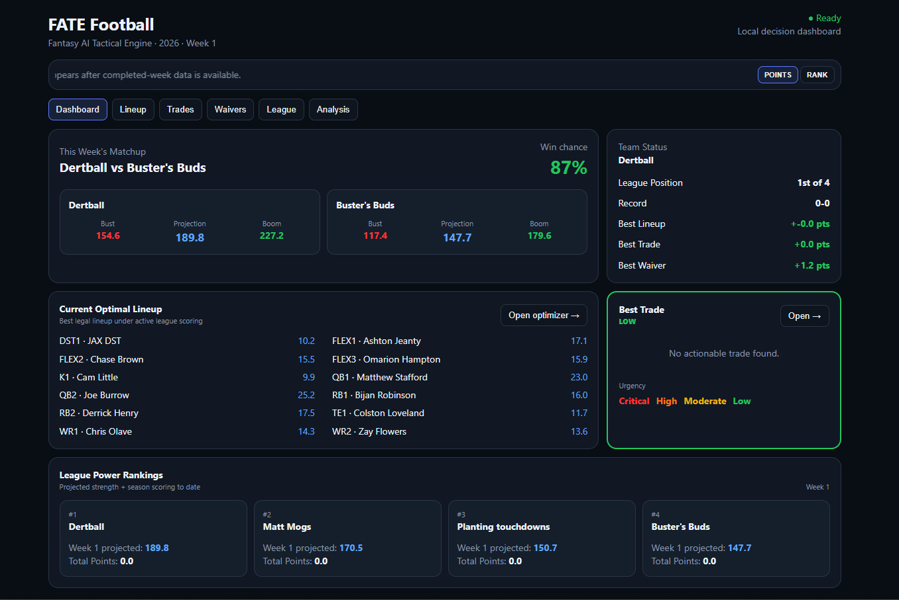

Statistical Projections
Position-aware models estimate player opportunity and expected fantasy production using only information available before the target week.
- Historical feature pipeline
- Position-specific modeling
- Leakage-safe training
Fantasy Ai Technical Engine
Modeling player outcomes ~ Simulating uncertainty ~ Optimizing decisions
FATE was designed as a complete decision pipeline rather than a projections-only model. It starts with player forecasting, carries uncertainty forward through simulation, and evaluates outcomes inside a live fantasy league context.
Most fantasy tools stop at projected points or rankings. Those outputs are useful, but they do not directly answer harder questions such as who should start, whether a waiver pickup materially improves the roster, or whether a trade helps the team over the rest of the season.
FATE turns forecasting into a league-aware workflow. The system produces player-level expectations, converts them into outcome distributions, and evaluates those distributions against scoring rules, roster constraints, replacement options, and matchup context.
The project is organized so historical evaluation and live weekly runs use the same core projection, simulation, and decision functions. That keeps testing aligned with the real workflow.
Position-aware models estimate player opportunity and expected fantasy production using only information available before the target week.
Monte Carlo simulation converts point estimates into plausible outcome distributions while preserving opportunity and game-level consistency.
League rules and current rosters convert simulated outcomes into practical lineup, waiver, trade, and ranking decisions.
FATE combines supervised machine learning with calibration, position-aware feature engineering, and Monte Carlo simulation. The goal is not only to estimate an expected fantasy score, but to model a realistic range of outcomes that can support roster decisions.
Quarterbacks, running backs, wide receivers, tight ends, kickers, and defenses are modeled with position-specific feature sets so each role can learn from the signals that actually drive its scoring.
Rolling usage, recent production, opportunity, team context, and historical baselines are built from information available before the target week. Features are constructed to preserve chronological integrity.
Historical seasons are evaluated sequentially. Each held-out period is predicted using only prior data, creating out-of-sample estimates that better approximate how the production model behaves in real use.
Out-of-sample residuals are monitored by position, tier, and forecast range. Systematic over- or under-projection is corrected using prior evaluation data rather than future information.
Model estimates can be blended with stable priors and simulation-derived expectations. Position-specific blending reduces variance where raw model outputs are noisy without collapsing stronger signals.
Evaluation extends beyond MAE. Ranking correlation, pairwise ordering, rank miss, and decision regret measure whether the system correctly separates players inside the actionable part of the player pool.
The simulation layer treats the point projection as the center of a distribution rather than a deterministic answer.
Start from the calibrated player projection and position-specific uncertainty estimates.
Generate plausible volume and scoring outcomes while preserving role-specific ranges and game context.
Targets, touches, passing volume, and other team opportunities are kept internally coherent so players on the same offense do not independently exceed realistic totals.
Typical runs use roughly 100 simulations for historical backtests and up to 1,000 for weekly production analysis, depending on runtime needs.
The resulting samples become floor, median, ceiling, bust, regular, and boom estimates used by the General Manager layer.
Walk-forward testing keeps each held-out season temporally isolated so only information that would have existed at the time can influence the prediction.
The position split is shown intentionally instead of reducing the comparison to a single headline number. FATE currently leads the ESPN benchmark at QB and WR, is approximately even at RB, and trails at TE.
Exact-point accuracy
Ranking correlation
Head-to-head ordering
Cost of imperfect choices
The live interface organizes the system around weekly matchup context, optimal lineups, team status, waiver and trade recommendations, and league-level summaries.

The dashboard currently uses a simplistic dark interface with clear contrast colors for pertinent information being displayed.
FATE was expanded with football-specific logic for sparse data, changing player availability, game environment, and shared team opportunity.
Adjusts player outlooks when availability changes and redistributes affected opportunity across teammates.
Builds usable priors for players without NFL history from college production, draft and athletic-profile signals.
Adds game-weather context where conditions can materially alter passing, kicking, and scoring expectations.
Constrains shared team volume so targets, touches, and passing opportunity are not projected independently.
Separates designed runs, scrambles, and kneels to better represent quarterback rushing and limit inflation.
Uses position-specific scoring and opportunity logic instead of treating special teams as generic fallback projections.
Places individual forecasts inside the surrounding offense, matchup, expected opportunity, and game environment.
Tracks systematic residual error and applies leakage-safe corrections from prior out-of-sample evaluation.
The implementation emphasizes reproducibility, stable interfaces, and a clear separation between internal computation and the outputs used by the interface.
Backtests and weekly production runs share the same model, simulation, and decision functions to reduce train/serve drift.
ESPN league data supplies team rosters, scoring rules, matchup context, and the live state required for league-specific recommendations.
Bias, calibration, ranking quality, and decision metrics are evaluated independently so aggregate accuracy does not hide local weaknesses.
Internal computation is separated from cleaned weekly and season summaries intended for the interface and downstream analysis.
Designed as an end-to-end fantasy football platform rather than a standalone prediction model.